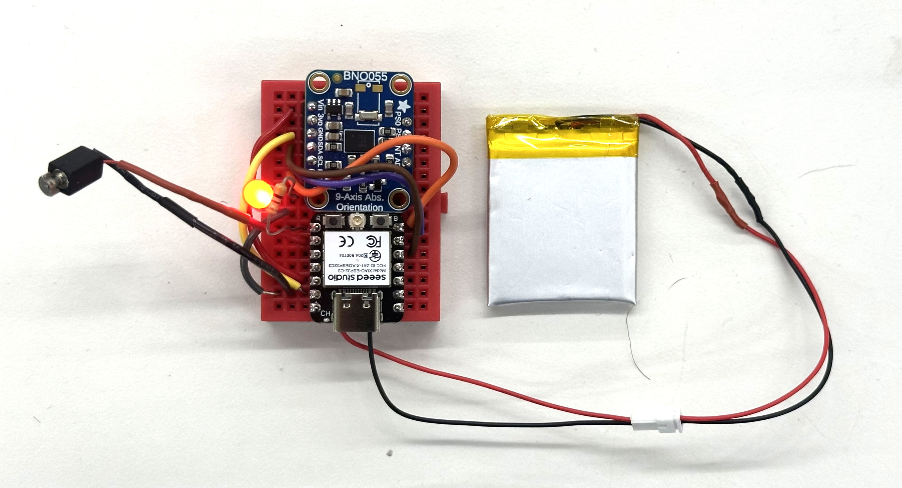

Here it is, folks: the pigeonbelt in its final form! It's small, sleek, integrated, and is so much fun to wear.
Features:
Staggeringly good fortune, excellent guidance, and a lot of work.
The Bosch BNO055 is a 9-axis IMU that has a built-in Kalman filter to smooth out the data it collects. It also has a built-in compass, which is what I used to make the pigeonbelt point north. The BNO055 is a great sensor, and completely made this project work. The original sensor was a nightmare to calibrate and make sense of, but with just a little callibration, the Bosch spits out a fairly reliable Euler-angle Yaw reading that it automatically bases around north -- at 0 degrees. Stunning.
Its quirks include: it needs a second to callibrate with very little movement when it's first turned on, and sometimes it thinks north is in the wrong direction if there's interference from other magnetic fields. Its orientation when vertical also required offsetting its "north" reading by 90 degrees because otherwise the X/Y/Z axes seem to point west. But once all of that was accounted for, it simply worked. it's such a treat to plug in a sensor, run test code for a few hours, and have it working that I'm just floored. Well done Bosch.
The Bosch successfully wired to the Xiao!
#include <Adafruit_BNO055.h>
#include <Adafruit_Sensor.h>
#include <Wire.h>
// Magnetic declination for Cambridge, MA (as of my last knowledge update - PLEASE VERIFY CURRENT VALUE)
const float magneticDeclination = -14.0; // Example value - VERIFY!
const float northTolerance = 5.0;
const int ledPin = D7;
const int vibePin = D8;
Adafruit_BNO055 bno = Adafruit_BNO055(55, 0x28, &Wire);
void setup() {
Serial.begin(115200);
Serial.println("BNO055 North Detection with LED");
pinMode(ledPin, OUTPUT);
digitalWrite(ledPin, HIGH); // LED on to start
pinMode(vibePin, OUTPUT);
digitalWrite(vibePin, LOW); // Vibe Motor off to start
if (!bno.begin()) {
Serial.println("Ooops, no BNO055 detected ... Check wiring!");
while (1);
}
bno.printSensorDetails();
Serial.println("\nCalibration status values: 0=uncalibrated, 3=fully calibrated");
Serial.println("Calibrate the sensor for best accuracy!\n");
}
void loop() {
digitalWrite(ledPin, HIGH); // LED on each loop
digitalWrite(vibePin, LOW); // Motor off on each loop
sensors_event_t event;
bno.getEvent(&event, Adafruit_BNO055::VECTOR_EULER);
float yaw = event.orientation.x;
float pitch = event.orientation.y;
float roll = event.orientation.z;
float adjustedYaw = yaw - 90.0;
if (adjustedYaw < 0) adjustedYaw += 360.0;
float trueNorthYaw = adjustedYaw + magneticDeclination;
if (trueNorthYaw < 0) trueNorthYaw += 360.0;
else if (trueNorthYaw >= 360) trueNorthYaw -= 360.0;
Serial.print("Yaw: "); Serial.print(yaw);
Serial.print(" Adjusted Yaw: "); Serial.print(adjustedYaw);
Serial.print(" True North Yaw: "); Serial.print(trueNorthYaw);
Serial.print(" Pitch: "); Serial.print(pitch);
Serial.print(" Roll: "); Serial.print(roll);
Serial.println("");
if (trueNorthYaw >= (360.0 - northTolerance) || trueNorthYaw <= northTolerance) {
Serial.println("North - LED OFF");
digitalWrite(ledPin, LOW);
Serial.println("North - Motor On");
digitalWrite(vibePin, HIGH);
delay(200);
digitalWrite(ledPin, HIGH); // LED back on
digitalWrite(vibePin, LOW);
}
delay(100);
}
Once the Bosch was working, I wired in an LED to turn on and off when the BNO055 pointed north -- this way I wouldn't have to rely on the serial monitor in Arduino IDE to tell. The LED is wired in series with a resistor and attached to Xiao pin D7, and I coded it to be on always except when the board points north -- this design would by default show me that the device is on and functioning, and also communicate that the sensor is working.
To my surprise, this worked flawlessly and was intuitive to interpret.
I couldn't find any button-sized eccentric motors in the lab, which was fortunate because Nathan instead found a slightly larger one that created a stronger buzz. I tested it in a benchtop power supply and realized that it could be powered directly by the Xiao, which was a huge boost for my miniaturization efforts. I added in code that would turn on the motor when the LED turned off, which was when the board was pointing north.
To my surprise, once again, this simply worked. Goodness. Was I learning? Or lucky? Definitely both!

The full working guts of the pigeonbelt!
The battery is a 3.7V battery that fits directly behind the prototyping breadboard. I soldered it to the Xiao's +/- terminals via an outlet cord, so that I could replace the battery in the future without needing to resolder anything or rip apart the board.
After getting the whole board working correctly, I decided to do something super risky — put in a switch. This required snipping one of the battery's wires and soldering it to the switch terminals. My soldering technique was pretty solid after building the breadboard, and fortunately when I turned on the switch, the LED lit up and the power flowed.
Safe, working, undo-able breadboard on the left. Scary, blank, solder-required, no-turning-back prototyping breadboard on the right.
After getting everything working on the breadboard, the most nerve-wracking step was removing all of the components and permanently soldering them to a prototype breadboard. I needed to do this to save space and increase durability of the pigeonbelt -- but it required breaking apart my fully working circuits and wire-by-wire soldering them to both the front and back of a prototyping breadboard. The cable management was scary because photos didn't convey which hole each wire was going into -- parallax and perspective from the camera line sometimes meant that certain cables appeared to go into one hole, but in fact went in to the hole just next to it. I decided to use gaussian splats with Polycam to solve this issue: if a photo didn't have enough information in it for me to be 1000% confident about where I needed to solder each wire, then a full 3D model might.
I took 100 photos of the breadboard from all angles, moving the phone in a dome over it while in Macro photo mode. Polycam generated this stunning splat in a few minutes. Notably, the 3D model it generated was far too blurry and imprecise to be useful. Gaussian splats have completely changed the game of reality capture.
With my 3D model reference, I felt confident ripping apart the breadboard and beginning to solder. This ia a tricky process because the wires get soldered to both the front and the back of the breadboard, which is hard to visualize -- and if you get even a single connection wrong, the whole thing won't work and it'll be almost impossible to debug the reason. The splat was absolutely crucial. I'm blown away -- after an hour of intense focus and soldering, when I plugged the battery in, the chips turned on and the LED flashed when I aimed it north. I almost wept.
The Bosch successfully wired to the Xiao!
I designed a brand new housing in Fusion. This one needed to be comfortable enough to wear all day without scratching you -- which required filleting the corners. It also needed to be fully undoable -- I wanted to be able to take it apart and replace things later, instead of rely on glue.
The front face snaps on with special snug tabs. The self-contained breadboard screws in with 4 screwholes. The whole assembly can be printed in 5 hours.
My first version didn't have the USB hole, or LED hole, or switch hole in the right place. The second version mostly did -- but the switch hole had to be extended a bit, quite manually. Also, apparently the PS70 Prusa printers are much higherquality than the GSD's Dremel ones, because my final print from the GSD machines was much rougher, and the support material was a nightmare to remove. Ultimately I needed to use a heat gun which caused the scrow mounting holes to bend. In future, I like the control afforded by the Prusa slicer app and will use these PS70 machines as my default.
Julia drew a very proud pigeon for the belt buckle. I took a photo of it and brought it into photoshop to shade it, so that the brighter parts would come forward and the darker parts would be pushed back when I applied the image as a displacement mask in blender.
After messing around between photoshop and blender together for an hour, we got the pigeon looking the way we liked; with its hat and tie sticking out, its wing slightly curved, and the background faded in a gradient that when printed would look like a radar signal coming out from the pigeon!
I then used Extrude in blender to give the pigeon's displaced surface some volume, used a boolean difference to cut a straigh flat bottom to it, and created a corner-cutting cube in blender to make each of the pigeon faceplate's corners match the filleting of the buckle lid from fusion. This was fairly manual and I'm sure there exists a better way to do it, but you have to go with what you've got!
I superglued the pigeon faceplate to the buckle lid, and sanded the edges. Then I painted all of it with Buff n Scuff, or Rough n Buff, or whatever that metallic paint is called, to give the buckle an old western cowboy burnished feel.
I used Julia's grandpa's old leather belt, drilled some new holes through it to fit the buckle's peg diameter, and took it for a spin.
It worked. I mean, it really worked. The vibrating isn't annoying -- unless you're standing facing due north. It's noticeable but subtle. And it has already started changing the way I understand space as I walk between buildings at harvard and my home. I'm just stunned. And so proud of myself. And so unbelievably grateful to Nathan, Bobby, and Kassia for everything they did to teach me how to build the nonsensical things in my head. This project has been an idea since I was ten. Twenty-six years later, here we are. What a world.
I want to make some changes to it, of course.
Other than that, I honestly think this thing is ready for production. If I put it all on a fully integrated PCB it could be half the thickness and 20% smaller in height and width -- a truly viable product!